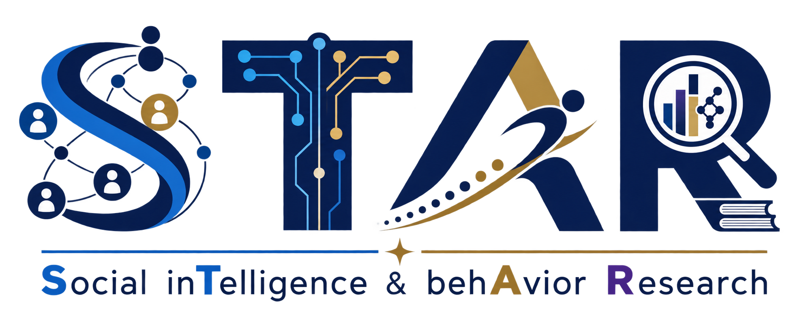
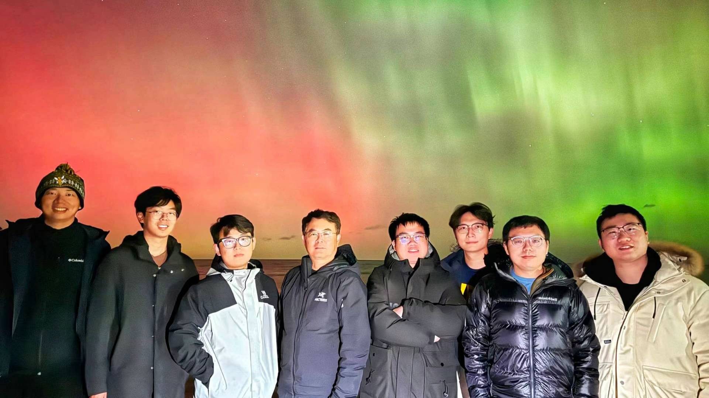
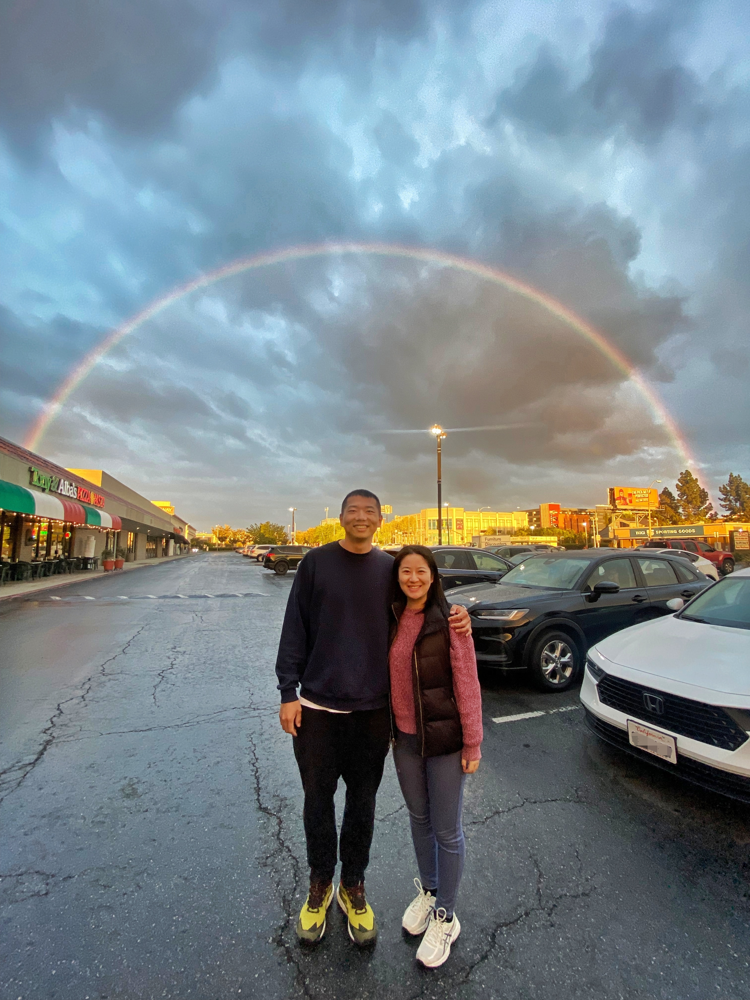

Hanjia Lyu
Assistant Professor of Computer Science
Email: hjlyu@smu.edu.sg Office: SCIS1 4048

|
Hanjia Lyu
Assistant Professor of Computer Science
Email: hjlyu@smu.edu.sg Office: SCIS1 4048
|
|
I am an Assistant Professor of Computer Science in the School of Computing and Information Systems (SCIS) at Singapore Management University (SMU). Previously, I received my Ph.D. in Computer Science from the University of Rochester (UR), where I was advised by Prof. Jiebo Luo. My research lies at the intersection of AI and human behavior, where I develop human-aligned AI systems that can understand, reason, and act in ways consistent with human cognition and decision-making, ultimately addressing real-world challenges for social good.
Prospective Students: If you are interested in working with me as a Ph.D. student, master's student, undergraduate student, visiting student, or research intern, please send me an email with your CV, transcripts (if applicable), and a brief description of your research interests and relevant experience.
For information about the Ph.D. program and the application process, please visit https://computing.smu.edu.sg/phd.


